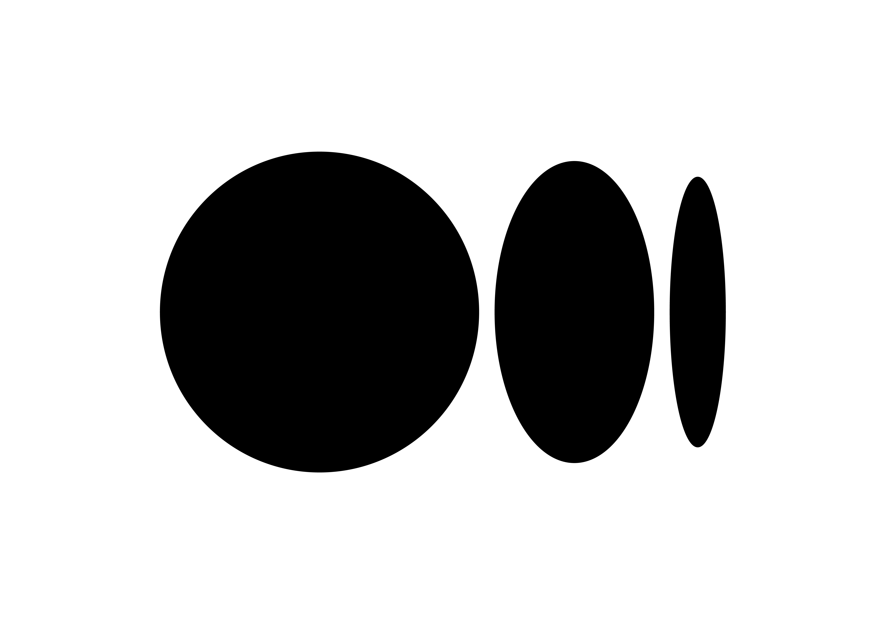
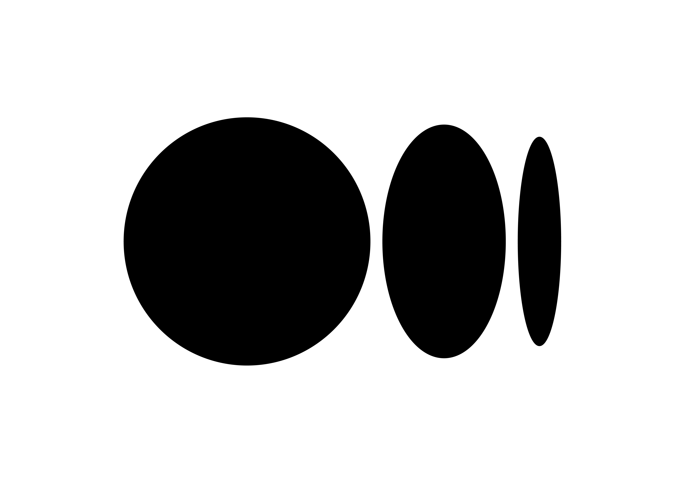

A bit about me
Originally trained as a mechanical engineer but found interest and passion in data science and AI.
Currently:
Things I worked on
Data Science & STEM Salary Analysis from Levelsfyi
(Part of Master's coursework)
A Public Shiny App for Frog Monitoring
(Part of Master's coursework)
- A web app with a simple charts that shows the count of frog species with particular year, and shows the count of frog species over time.
- Code here
- App here
A Public Web App for Validating Predictions from ML Models
Numerical Modelling and Simulation of Ocean Wave Energy at Malaysian Coast
Supervisor: Dr. Siti Habibah Shafiai
- Employed a numerical method to assess the ocean wave energy resource at Malaysian coast.
- Developed a MATLAB code to validate the accuracy of the employed numerical method.
- Developed a MATLAB GUI for the validation code of the numerical model.
- Developed a MATLAB code for the application of numerical model on assessing the ocean wave energy resource.
Final Year Project: Multi-objective Hybrid Renewable Energy Resource Optimisation using Improved Flower Pollination Algorithm
Supervisor: Assoc. Prof. Dr. Ong Pauline, Madam Hanani Abd Wahab
- Determined the optimal sizing of a hybrid renewable energy system comprised of solar photovoltaics, wind turbines, batteries and a diesel engine.
- Utilised evolutionary algorithms to optimise the appropriate installation capacity of the components, with respect to solar insolation, wind speed, ambient temperature and electricity consumption of an area of interest.
- Conducted sensitivity analysis on the proposed hybrid renewable energy system with respect to variation of solar and wind.
- All experimental and analytical tests are conducted numerically using MATLAB.
Design and Fabrication of Quadrupedal Walking Robot for ROBOCON Malaysia 2019
Team advisor: Dr Chia Kim Seng
- Research and develop model design of quadrupedal robot concepts using SOLIDWORKS.
- Create a conceptual and eventually a working prototype from CAD design with regard to available resources using hand tools and bench equipment as a proof of concept for university fund negotiation talks.
- Optimised a manually-operated robot which will be able to move on wheels, pick up, pass and throw an item.
- Applied Fused Deposition Modelling technique to fabricate custom-made robot parts such as gears, couplings and sensor mountings using Ender 3 Pro 3D printer and Ultimaker Cura slicer software.
- Fabricated two autonomous and one manually-operated robot using mitre saw, bench drill, angle grinder, and hand tools.
Design and Fabrication of Pass-and-shoot Robot for ROBOCON Malaysia 2018
Team advisor: Dr Chia Kim Seng
- Designed a manual-operated robot with clamping function using SOLIDWORKS.
- Fabricated aluminium omniwheel shaft for Vexta 30W motor using Harrison M300 lathe machine.
- Fabricated a manual-operated robot with clamping function based on CAD design using hand tools and bench equipment.

 
